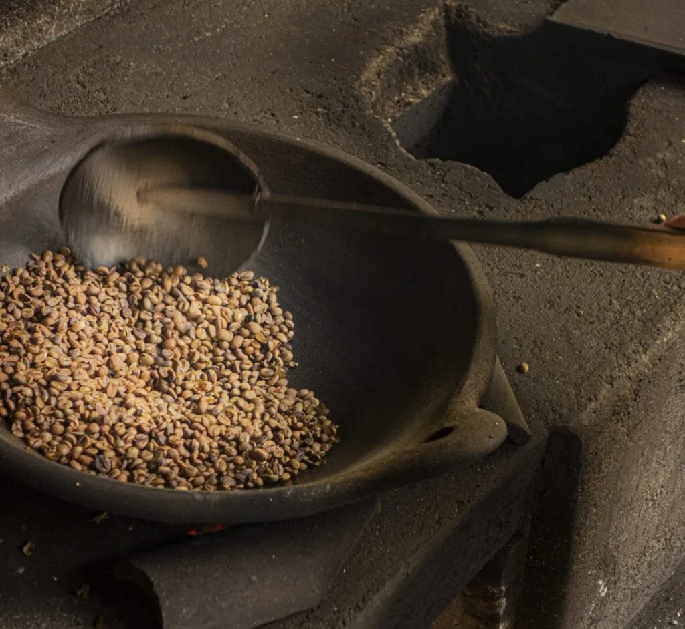

InicioBlog
BlogHistorias de taza
Cultura, preparación y todo lo que necesitas saber para entender el café de especialidad.
Café de trigo
Tradición y preparación del café de trigo
Conoce esta línea, sus sabores y las indicaciones de preparación de cada producto.
Un legado chileno que viene de lejos
Del tiempo de escasez en Europa a la tradición campesina chilena.

Una taza fácil y deliciosa
Prensa francesa, olla o recetas especiales con y sin leche.
Guía del café de especialidad
Contenido educativo para entender qué es un café de especialidad y elegir el tuyo.
Qué es un café de especialidad
Origen, altura, variedad y puntaje de taza que lo distinguen.
Origen y territorio
Cómo el lugar de cultivo influye en el sabor.
Procesos: Lavado, Natural y Honey
Cómo cambia el perfil de taza según el proceso.
Tueste y perfil de taza
De medio suave a medio intenso: qué esperar en cada taza.
Comentario para Café Alegra: los textos finales de cada artículo los redacta Café Alegra. Los datos técnicos de cada café van en su ficha de producto.